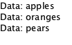

Repeater QML Type
Instantiates a number of Item-based components using a provided model. More...
| Import Statement: | import QtQuick |
| Inherits: |
Properties
Signals
- itemAdded(int index, Item item)
- itemRemoved(int index, Item item)
Methods
- Item itemAt(index)
Detailed Description
The Repeater type is used to create a large number of similar items. Like other view types, a Repeater has a model and a delegate: for each entry in the model, the delegate is instantiated in a context seeded with data from the model. A Repeater item is usually enclosed in a positioner type such as Row or Column to visually position the multiple delegate items created by the Repeater.
The following Repeater creates three instances of a Rectangle item within a Row:
import QtQuick Row { Repeater { model: 3 Rectangle { width: 100; height: 40 border.width: 1 color: "yellow" } } }
A Repeater's model can be any of the supported data models. Additionally, like delegates for other views, a Repeater delegate can access its index within the repeater, as well as the model data relevant to the delegate. See the delegate property documentation for details.
Items instantiated by the Repeater are inserted, in order, as children of the Repeater's parent. The insertion starts immediately after the repeater's position in its parent stacking list. This allows a Repeater to be used inside a layout. For example, the following Repeater's items are stacked between a red rectangle and a blue rectangle:
Row { Rectangle { width: 10; height: 20; color: "red" } Repeater { model: 10 Rectangle { width: 20; height: 20; radius: 10; color: "green" } } Rectangle { width: 10; height: 20; color: "blue" } }
Note: A Repeater item owns all items it instantiates. Removing or dynamically destroying an item created by a Repeater results in unpredictable behavior.
Considerations when using Repeater
The Repeater type creates all of its delegate items when the repeater is first created. This can be inefficient if there are a large number of delegate items and not all of the items are required to be visible at the same time. If this is the case, consider using other view types like ListView (which only creates delegate items when they are scrolled into view) or use the Dynamic Object Creation methods to create items as they are required.
Also, note that Repeater is Item-based, and can only repeat Item-derived objects. For example, it cannot be used to repeat QtObjects:
// bad code: Item { // Can't repeat QtObject as it doesn't derive from Item. Repeater { model: 10 QtObject {} } }
Property Documentation
count : int |
This property holds the number of items in the model.
Note: The number of items in the model as reported by count may differ from the number of created delegates if the Repeater is in the process of instantiating delegates or is incorrectly set up.
delegate : Component |
The delegate provides a template defining each item instantiated by the repeater.
Delegates are exposed to a read-only index property that indicates the index of the delegate within the repeater. For example, the following Text delegate displays the index of each repeated item:

If the model is a string list or object list, the delegate is also exposed to a read-only modelData property that holds the string or object data. For example:
Column { Repeater { model: ["apples", "oranges", "pears"] Text { required property string modelData text: "Data: " + modelData } } } |  |
If the model is a model object (such as a ListModel) the delegate can access all model roles as named properties, in the same way that delegates do for view classes like ListView.
See also QML Data Models.
model : var |
The model providing data for the repeater.
This property can be set to any of the supported data models:
- A number that indicates the number of delegates to be created by the repeater
- A model (e.g. a ListModel item, or a QAbstractItemModel subclass)
- A string list
- An object list
The type of model affects the properties that are exposed to the delegate.
See also Data Models.
Signal Documentation
This signal is emitted when an item is added to the repeater. The index parameter holds the index at which the item has been inserted within the repeater, and the item parameter holds the Item that has been added.
Note: The corresponding handler is onItemAdded.
This signal is emitted when an item is removed from the repeater. The index parameter holds the index at which the item was removed from the repeater, and the item parameter holds the Item that was removed.
Do not keep a reference to item if it was created by this repeater, as in these cases it will be deleted shortly after the signal is handled.
Note: The corresponding handler is onItemRemoved.
Method Documentation
Item itemAt(index) |
Returns the Item that has been created at the given index, or null if no item exists at index.